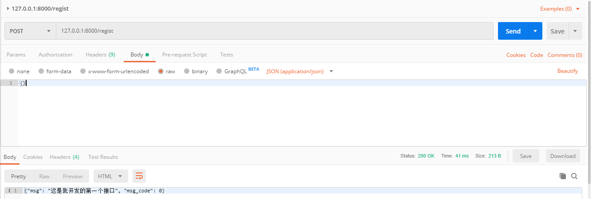

使用flask进行接口开发
语言：Python3
框架：flask
在进行开发前首先得安装flask，然后才能使用。安装可以直接使用pip命令进行安装：pip install flask。
使用flask进行接口的流程：
1、定义一个服务server：
server = flask.Flask(__name__) #创建一个服务，把当前的python文件当做一个服务启动，__name__代表当前的python文件。2、定义接口函数：
接口函数的定义需要在定义函数上面加上flask提供的装饰器 “@server.route()”，将普通函数转换为服务登录接口。
@server.route('/regist',methods=['get','post']) #第一个参数表示请求接口路径，第二个参数表示接口请求方式，如果不填的话默认get方式。3、运行服务server：
server.run(port=8000,debug=True,host='127.0.0.1') # port不能与本地服务端口冲突，host为要访问的IP地址，debug=True，表示当前为调试状态运行，修改完代码程序会自动运行，不需要手动重新运行。
按照以上步骤完成一个小接口：
示例一：
import flask,json
server = flask.Flask(__name__) #创建一个服务，把当前的python文件当做一个服务启动，__name__代表当前的python文件。
@server.route('/regist',methods=['post']) #第一个参数表示请求接口路径，第二个参数表示接口请求方式，如果不填的话默认get方式。
def index():
res = {'msg':'这是我开发的第一个接口','msg_code':'0000'}
return json.dumps(res,ensure_ascii=False) #二进制转化为utf-8
server.run(port=8000,debug=True,host='127.0.0.1') #port不能与本地服务端口冲突，host为要访问的IP地址，debug=True，表示当前为调试状态运行，修改完代码程序会自动运行，不需要手动重新运行。使用postman请求后结果如下：

示例二：
接口实现接收请求数据，并对接收数据按照一定方式进行验证签名，签名通过后，获取接口请求过来的用户信息，查找数据库中是否存在该条记录，无记录进行注册步骤。
import flask,json
server = flask.Flask(__name__) #__name__代表当前的python文件。把当前的python文件当做一个服务启动
@server.route('/regist',methods=['post']) #接口请求地址及接口请求方式
def regist():
jsondata = flask.request.get_json() #获取到的值为请求的json串
username = jsondata['username'] if ('username' in jsondata) else ''
password = jsondata['password'] if ('password' in jsondata) else ''
signjudge = signMD5.signjudge()
if signjudge.jsonsignjudge(jsondata) != jsondata['sign']:
########## 签名校验失败 ##########
return json.dumps({'msg': '签名校验失败', 'msg_code': '3001'}, ensure_ascii=False)
else:
pass
if username == '' or password == '':
########## 缺少必填信息 ##########
return json.dumps({'msg': '缺少必填信息', 'msg_code': '1001'}, ensure_ascii=False)
else:
pass
interfacejudge = interfcaejudge.interfacejudge()
if interfacejudge.judgefielduser(username) != None:
return json.dumps({'msg': '用户已存在', 'msg_code': '2001'}, ensure_ascii=False)
else:
interfacejudge.insertsuerinfo(username,password)
return json.dumps({'msg': '注册成功', 'msg_code': '0000'}, ensure_ascii=False)
server.run(port=8000,debug=True,host='127.0.0.1')